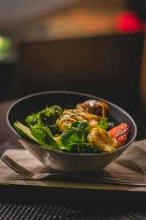

CLASSIC BIRIYANI

POROTA

COMBO RICE
About Us
J J Restaurant, Ooty, Tamil Nadu: Cuisine: This restaurant in Ooty offers a diverse culinary experience with a blend of Chinese, South Indian, and North Indian cuisines. Quality and Service: It is known for its high-quality dishes, crafted with fresh ingredients and served with impeccable service. Reviews mention "Amazing food and great service" and "good quality and perfectly priced". Ambiance: Features a spacious dining area that is suitable for romantic dinners or family gatherings.